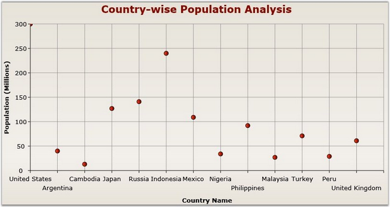
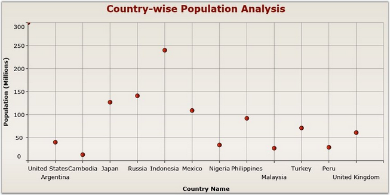

The EdgeLabelsDrawingMode property is used to determine the drawing options of edge labels. This property has the following two options to render the edge labels.
|
EdgeLabelsDrawingModes |
Usage |
|
Center |
Axis labels are placed at the center of the Grid lines. Part of the axis label may be displayed outside the chart area. |
|
Shift |
The label should be shifted to either right or left so that it comes within the chart area. |
The below given code snippet can be used to customize the edge labels.
|
[XAML]
<syncfusion:ChartArea.PrimaryAxis> <syncfusion:ChartAxis EdgeLabelsDrawingMode="Shift"/> </syncfusion:ChartArea.PrimaryAxis> |
|
[C#]
ChartArea area = new ChartArea(); ChartAxis axis = new ChartAxis(); axis.EdgeLabelsDrawingMode = EdgeLabelsDrawingMode.Shift; area.PrimaryAxis = axis; |

Figure 95: EdgeLabelsDrawingMode = "Center"

Figure 96: EdgeLabelsDrawingMode = "Shift"